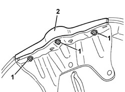

7055A84 FRONT BADGE ON BONNET LID OR RADIATOR BADGE - R.R.
- Path
- Procedures > 70 FITTINGS > 7055 MOULDINGS AND PROTECTION > 7055A EXTERIOR MOULDINGS > 7055A84 FRONT BADGE ON BONNET LID OR RADIATOR BADGE - R.R.
- Kind
- repair procedure (removal / refitting; the operation number is the code)
- Applies to
- all engines; all production periods
- Interactive page
- https://sloeber94.github.io/elrnDB-aBrrSpdr/en/#/946002677
Applies to: all engines; all production periods
 Removing
Removing
 Refitting
Refitting- Open the bonnet.
1. Undo the nuts.
2. Remove the badge.

Applies to: all engines; all production periods
Refitting
Removing- Check that the badge is not damaged.
- Position the badge.
- Tighten the nuts.
- Close the bonnet.